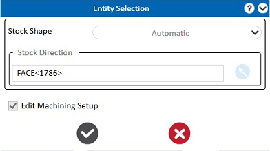
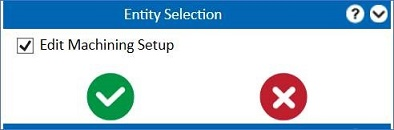
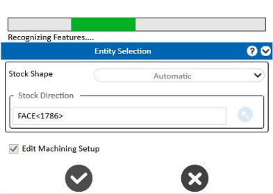
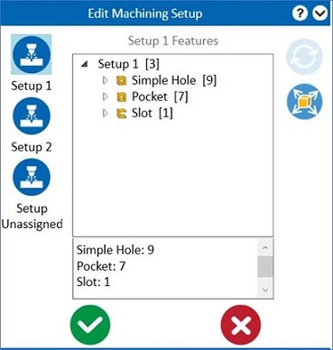
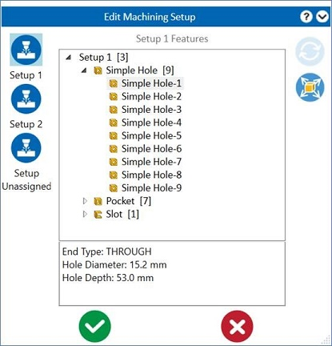
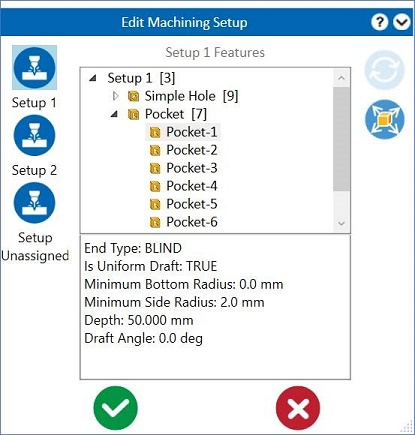
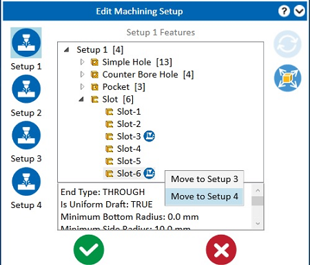
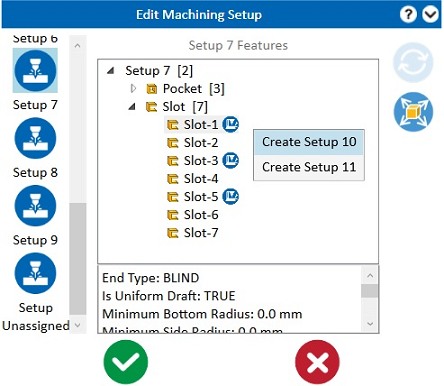
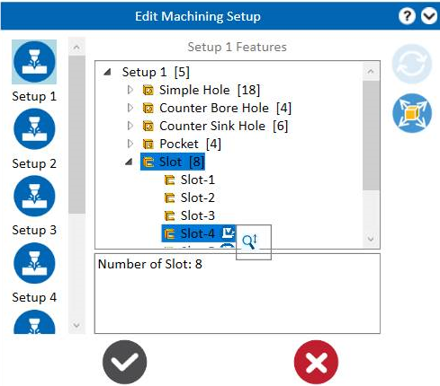

Prismatic Mill では、DFMPro は加工セットアップを表示および編集するためのオプションを提供します。この設定で「Display Machining Setup」チェックボックスをオンにすると、ユーザーは加工セットアップを確認できるようになります。加工セットアップの数やフィーチャーリストは、設計エンジニアがセットアップ内容を理解する助けとなります。セットアップ情報に基づいて、設計者は設計フィーチャーを最適化できます。
Note:
加工セットアップ情報の表示は、DFMPro Settings をバージョン 8.4.0 以降にアップグレードした後に利用可能です。
DFMPro 設定ダイアログボックスで Display Machining Setup オプションを選択すると、ユーザーはセットアップを表示できます。Entity Selection グループボックスで Edit Machining Setup オプションを選択すると、セットアップの詳細を確認できます。


このチェックボックスを選択し、 Analyze ボタンをクリックすると、DFMPro はフィーチャーを認識し、それらを加工セットアップに分類するプロセスを表示します。
Analyze ボタンをクリックすると、DFMPro はフィーチャーを認識し、それらを加工セットアップに分類するプロセスを表示します。

加工フィーチャーは Setup 1、Setup 2、Setup 3 などに分類されます。各セットアップをクリックしてフィーチャーの詳細を確認できます。個々のフィーチャーをクリックすると、その関連フィーチャーパラメータを表示できます。

Simple Hole-1 をクリックすると、下部のセクショングループボックスにパラメータの詳細が表示されます。
例：穴タイプ、穴径、穴深さ など。

ポケットフィーチャーのパラメータには、ポケットタイプ、底面R、側面R、深さ、ドラフト角が含まれます。

このアイコンは、複数の加工方向を持つフィーチャーに対して表示されます。このボタンを使用すると、フィーチャーを利用可能なセットアップへ移動できます。
フィーチャーを右クリックすると、 Edit Setup ボタンが表示されます。このボタンをクリックすると、セットアップのドロップダウンリストが表示されます。以下の例では、フィーチャーを Setup 3 または Setup 4 に移動する有効なオプションが示されています。

フィーチャーの加工方向を変更する際、利用可能なセットアップが存在しない場合、DFMPro はその方向に対して新しいセットアップを自動的に作成します。

Note:
変更されたセットアップは、同一の DFMPro セッション内で記憶されます。
Edit Machining Setup グループボックス内の  Reset to default setups ボタンをクリックすると、移動されたすべてのフィーチャーを元の状態に戻します。
Reset to default setups ボタンをクリックすると、移動されたすべてのフィーチャーを元の状態に戻します。
Show all machining direction setups オプションをクリックすると、すべてのセットアップとその加工方向を表示できます。
Note:
次の場合には、［Reset to default setups］ボタンは無効になります：
結果が生成された後は、加工セットアップを変更するための Machining Setup オプションは利用できません。
